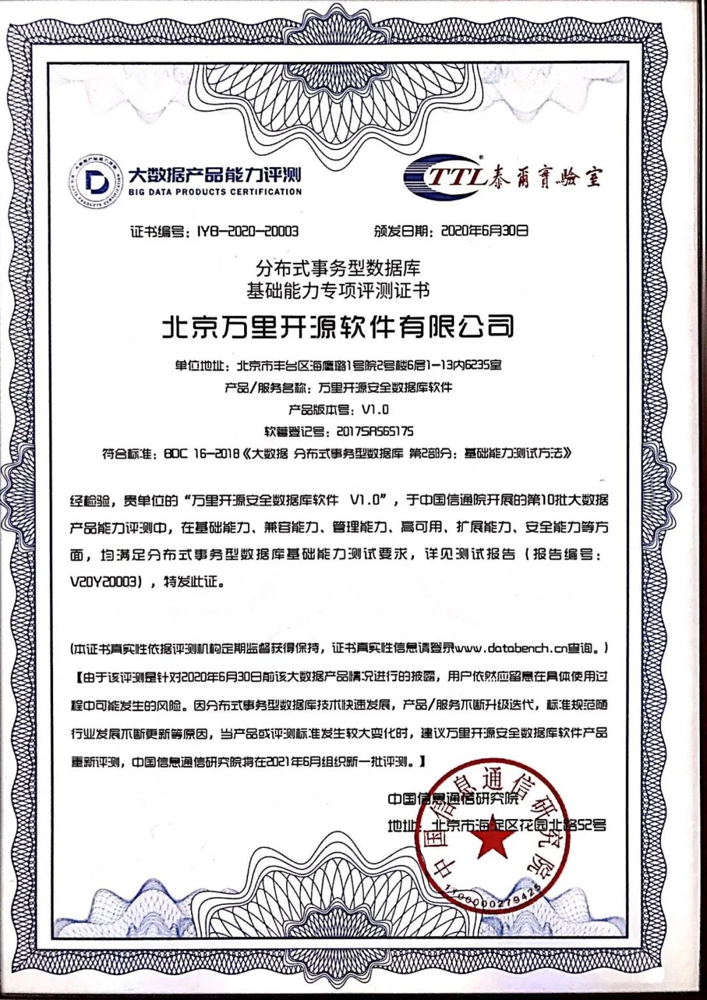

万里开源获信通院分布式事务型数据库测评证书
近日，万里开源安全数据库软件（GreatDB Cluster-安全版）V1.0通过中国信通院开展的第10批大数据能力测评，在基础能力、兼容能力、管理能力、高可用、扩展能力、安全能力等方面，均满足分布式事务型数据库基础能力测试要求。

在大数据、云计算、5G、物联网等新技术的带动下，金融、电信、电力、能源等重要行业普遍面临技术和业务上带来的全新挑战，传统的集中式架构无法满足业务需求，取而代之的将是高可靠、高性能、可横向扩展的大数据平台和国产的分布式事务型数据库。
万里开源安全数据库软件（GreatDB Cluster-安全版）始终坚持"极致性能、极致稳定、极致易用"的产品设计理念，拥有100%自主知识产权，在架构上采用了先进的原生分布式技术，具有极强的性能保障，产品拥有99.999%的高可靠性，支持灵活的横向在线扩展，可随着业务的增长持续增加数据库规模，满足了多样化系统运行的要求，适用于金融、电信、能源等大并发、大数据量、业务实时性要求高的领域。
此次通过大数据产品能力测评，进一步证明了公司在信息技术应用创新领域的实力。未来，公司将继续以开放、共享的心态，推动万里开源分布式数据库GreatDB系列产品在大数据领域的创新和应用，为企业用户提供更好用的国产数据库产品，赋能企业数智化转型。